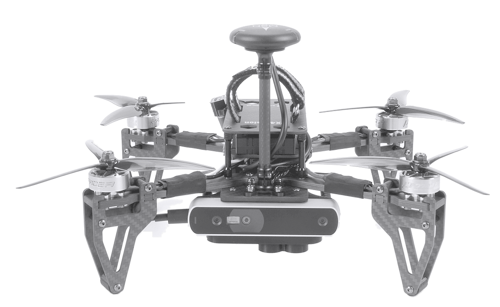

EDTH Taiwan Defense Tech Hackathon 2026 / Challenge 02
Taipei Drift
We stay on course when GNSS is jammed.
GNSS lost
Where the drone really is
Planned course
50 m apart
The problem
Once GNSS is jammed, a low-cost drone drifts off course.
36 s
is all it takes to drift 50 m. Jamming is routine in Ukraine and around Taiwan's outlying islands.
Source: own measurement, inertial sensors alone, median of 30 flights of the Mid-Air dataset. Jamming: Breaking Defense, January 2026.
The solution
It navigates by what it sees and hears.

GNSS
jammed
Aerial map
free, 4 MB per km²
Camera
speed and map fixes
Sun sensor
heading
Four antennas
ships' radio bearings
Range finder
height above ground
The whole drone from $875. Off-the-shelf parts. Free maps.
Sources: Just Security, June 2026 (drone from $300); our cost slide and own measurements. Photo: PX4 Vision kit, PX4 docs, CC BY 4.0, edited.
Demo
It crosses open water without GNSS.
Source of the video on the next slide: own simulator run, 4 October 2026.
Results / simulated, 4.3 km without GNSS
Each sensor we add cuts the error.
3 km
inertial sensors alone
On two sealed flights, run once after the code freeze: 12 m and 32 m. No wrong fix accepted.
Source: own runs, docs/simulation-results.md. Median error after GNSS loss, bars to scale. Simulated over real aerial imagery of Wufeng.
Results / real flight, Miaoli, Taiwan
It holds on real flight data from Taiwan.
3.3 m
median error over 4 km without GNSS. Dead reckoning alone: 54 m. Of 1,646 map fixes, none wrong.
Source: own test, docs/research/tuniu-level2-results.md. Replay of a real DJI flight, 2019. RTK as truth. Barometer simulated.
Next steps
Next, we fly it for real.
1
A real flight
The navigator on a small computer and a camera, on a cheap drone. GNSS recorded only as truth.
2
Build the hardware
The sun sensor and the radio direction finder, measured on the bench.
3
Night
A thermal camera against the same map.
The plan after the hackathon. Nothing on this slide is built yet.
We stay on course
when GNSS is jammed.
Backup
11 Our position
12 Cost per drone
13 Alternatives
14 Dependence
15 Market
16 Competition
17 Computing
18 Limits
Backup / our position
It is cheap, independent and honestly tested.
Price class
A $575 kit. The only other price we found: about $20,000 per aircraft.
Independence
Free maps and retail parts. Raptor needs a vendor licence per machine.
Rigour
Code frozen first. Sealed flights run once. Tests declared in advance.
Sources: DroneXL, May 2026 (Vermeer); Vantor developer guide; our cost slide; docs/simulation-results.md; docs/research/tuniu-level2-prereg.md.
Backup / cost per drone
The whole drone costs from $875.
Frontline FPV drone, complete
from $300
Just Security, June 2026
Computer, Raspberry Pi 5 with 2 GB
$78
raspberrypi.com
Downward camera
$29
adafruit.com
Memory card for the map, 64 GB
$32
samsung.com
Sun sensor
from $10
our cost report
Laser range finder
$299
digikey.com
Ships' radio direction finder
from $127
rtl-sdr.com, digikey.com
Drone and kit together
from $875
sum of the rows above
Sources: named in each row, checked 4 October 2026. Single-unit prices, lowest of each range. Amber: the parts we add.
Backup / what the alternatives cost per drone
Other ways to resist jamming cost far more.
$20,000
and up: anti-jam antenna (CRPA) for one long-range drone
$20,000
camera navigation with a GPU computer (Vermeer)
$15,000
and up: fibre-optic inertial unit
$1,500
scanning LiDAR alone, 498 g (Livox Avia, NT$47,660)
$575
everything we add, with its own computer and camera
$10
our core: the sun sensor
Bars to scale. Sources: Defence Blog, Aug 2026; DroneXL, May 2026; Inside GNSS, Nov 2022; DJI Store Taiwan; ours: vendor prices, 4 Oct 2026.
Backup / what each option ties you to
Every alternative ties the drone to a supplier.
Scanning LiDAR
Livox Avia
NT$47,660
Sold by DJI. Taiwan requires non-Chinese supply chains for drones bought by public agencies.
Licensed camera navigation
Vantor Raptor Guide
Not public
A licence file per machine that can expire, and the vendor's own 3D map data.
Anti-jam antenna
CRPA
from $20,000
Imported. Only a handful of makers.
Thermal camera for night
FLIR Boson 640
$3,558
An end-use statement before every shipment abroad.
Taipei Drift
camera, sun sensor, map
from $875
For the whole drone. Retail parts and free aerial photos.
Sources: DJI Store Taiwan; Defence Blog, Aug and Sept 2026; Vantor developer guide; GroupGets; our cost slide. Checked 4 October 2026.
Backup / market
Cheap drones are bought in very large numbers.
48,750
drones in Taiwan's tender
For 2026 and 2027. 34,000 are small multirotors.
4.5 M
FPV drones for Ukraine
Planned purchases in 2025, from $300 each.
$22.8 B
military drones by 2030
Market forecast, up from $15.8 B in 2025.
Proposed price: a $200 licence per drone, sold to drone makers. Taiwan's small multirotors alone: $6.8 M.
Sources: CNA, 23 July 2025 (tender notice); Kyiv Independent, March 2025; Just Security, June 2026; MarketsandMarkets, May 2025.
Backup / competition
The idea is proven. Ours is the low-cost version.
Taipei Drift
Raptor (Vantor)
VNS01
Vermeer VPS
Eagle Eyes (Ukraine)
Map
Free aerial photos
Licensed 3D data
Satellite imagery
3D terrain from satellite
Fresh reconnaissance
Hardware
Camera, sun sensor, one CPU core
Camera and a GPU
100 g unit, 5 W
Four cameras, GPU computer
Not public
Price per drone
$575 for the kit
Not public
Not public
About $20,000
Not public
Accuracy
12 to 32 m, simulated
Under 10 m
Up to 30 m
Not stated
Not public
States its error
Every frame, in metres
Confidence per frame
Not public
Not stated
Not public
Maturity
Weekend prototype
Flight-tested in Taiwan
Product
Fielded in Ukraine
In combat since 2023
Sources: makers' product pages (Vantor, UAV Navigation), DroneXL May 2026 (Vermeer), The Economist May 2024 (Eagle Eyes), own tests and cost slide.
Backup / computing
It runs on one CPU core, without a GPU.
11 ms
per camera frame
Room for 90 frames a second. The camera delivers 5 to 25.
0.07–2 s
per map fix
One fix every 30 s: under 7 percent of a core.
4 MB
of map per km²
All of Taiwan fits on a $32 card (36 GB).
Target: a Raspberry Pi 5, $78, 50 g, 3 to 10 W. GPU-based systems: a Jetson kit, $399, 174 g, 7 to 25 W.
Sources: own timing on one laptop core, not yet on a drone computer; raspberrypi.com, CNX Software, NVIDIA, Jeff Geerling's board tests.
Backup / limits
Night, fog and a jammed take-off are still open.
Night
Needs a thermal camera against the same map. Not built.
No ships' radio
Over water the estimate drifts until land is in view again.
Fog, rebuilt ground
The map match fails. The status then reads DEGRADED or LOST.
Jammed from take-off
Not covered. It calibrates itself on a few hundred metres with GNSS.
What is simulated
Demo and sealed flights. The demo autopilot flies on the true position.
Source: own tests, docs/simulation-results.md and docs/findings.md.